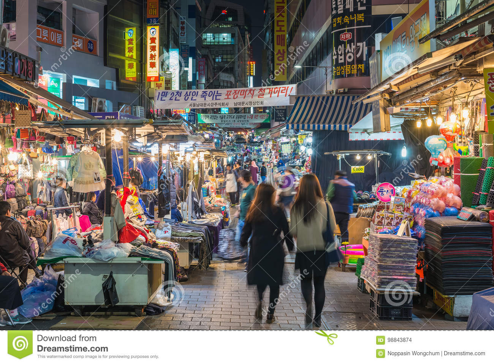
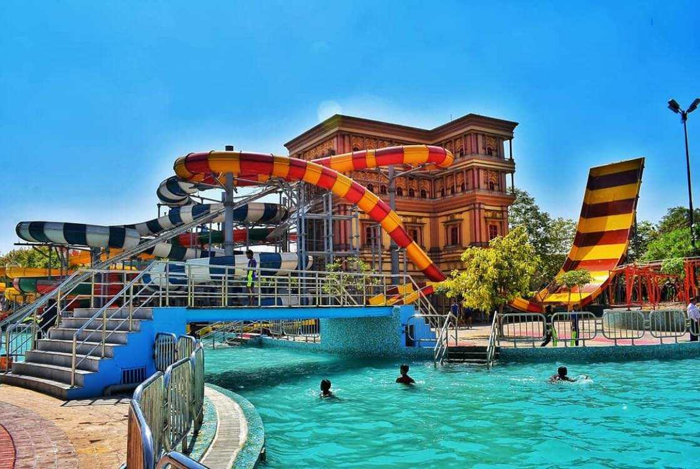

Let's take a look around this exciting city!
We provide you with the top 5 places to explore based on your needs. Select the requirement from the given menu and let's get started!!!
Kanpur, also known as Cawnpore, is a metropolitan city in the state of Uttar Pradesh in India. Founded in 1803, Kanpur became one of the most important commercial and military stations of British India. Nestled on the banks of Ganges River, Kanpur stands as the major financial and industrial centre of North India and also the ninth-largest urban economy in India. Today it is famous for its colonial architecture, gardens, parks and fine quality leather products which are exported mainly to the West. The city is famous for its leather and textile industries. It is the 12th most populous city and the 11th most populous urban agglomeration in India. Kanpur was an important British garrison town until 1947, when India gained independence. The urban district of Kanpur Nagar serves as the headquarters of the Kanpur Division, Kanpur Range and Kanpur Zone. With the first woolen mill of India, commonly known as the Lal Imli (literally meaning "Red Tamarind", for a brand produced by the mill) by the British India Corporation established here in 1876 by Alexander MacRobert. The eastern and northern facades of the mill are reminiscent of the Palace of Westminster, due to their architecture, proximity to the Ganges river and with the north-east corner of the mill being topped by a clock tower similar to Big Ben in London. This similarity underscores the city's importance and prestige during the British times, which extends till date; making the Lal Imli — a great highlight of the city. The city is also widely regarded as the "Leather City of the World" and is predominantly nicknamed as the "Manchester of the East", for its textile industries.
Meal Time!
The Aromas!

Follow up the directions!
Making way for a hearty meal is Aromas in Kanpur. This place is synonymous with delicious food that can satiate all food cravings. It is home to some of the most appreciated cuisines which include Chinese. So as to be able to cater to a large number of diners, it occupies a favourable location at Swaroop Nagar. Opposite Indian Overseas Bank,7/135,Swaroop Nagar-208002 is where one can visit the venue. Courtesy to this strategic location, foodies in and around the neighborhood can walk in to this eating house conveniently without facing any hassles related to commuting to this part of the city. It is one of the most sought after Take Away Joints in Swaroop Nagar. For people in other parts, the restaurant also has branches at other locations which include C K Mkt - Swaroop Nagar and can also be visited for an appetizing meal. This is a one of the renowned Take Away Joints in Kanpur.
Dhuaan!

Follow up the directions!
Making way for a hearty meal is Dhuaan in Kanpur. Established in the year 2011, this place is synonymous with delicious food that can satiate all food cravings. It is home to some of the most appreciated cuisines which include Italian,North Indian,Mexican. So as to be able to cater to a large number of diners, it occupies a favourable location at Kanpur Cantt. Cantonment,C/O Status Club Hotel 58,Tagore Road,Kanpur Cantt-208004 is where one can visit the venue. Courtesy to this strategic location, foodies in and around the neighborhood can walk in to this eating house conveniently without facing any hassles related to commuting to this part of the city. It is one of the most sought after Multicuisine Restaurants in Kanpur Cantt. The www.statusclub.co.in offers complete information of the restaurant.This is a one of the renowned Multicuisine Restaurants in Kanpur!
Little Chef!

Follow up the directions!
started way back in 1990 as a self service Restaurant and Ice Cream Parlour with a sitting capacity of seventy people. From the day one, Little Chef attracted people from different life styles and classes and has been specially popular amongst kids and youngsters. Now Little Chef is not little any more. It is a full fledged hotel with 56 temperature controlled rooms, twenty four hour room service, one Self Service Budget Restaurant, one specialty Restaurant, Executive Lounge, Bar, Conference facilities, Banquet facilities, Gymnasium etc.
Chin Mi!

Follow up the directions!
Making way for a hearty meal is Chin Mi The Chinese Restaurant in Kanpur. Established in the year 2001, this place is synonymous with delicious food that can satiate all food cravings. It is home to some of the most appreciated cuisines which include Chinese. So as to be able to cater to a large number of diners, it occupies a favourable location at Kanpur H O. Rave-3 Multiplex Plot No-11,Block No-6,Parvati Bangla Road,Kanpur H O-208001 is where one can visit the venue. Courtesy to this strategic location, foodies in and around the neighborhood can walk in to this eating house conveniently without facing any hassles related to commuting to this part of the city. It is one of the most sought after Restaurants in Kanpur H O. The www.rave3.com offers complete information of the restaurant. This is a one of the renowned Restaurants in Kanpur.
Cawnpore 1857!
Follow up the directions!
Making way for a hearty meal is Cawnpore 1857 (The Landmark Hotel) in Kanpur. This place is synonymous with delicious food that can satiate all food cravings. It is home to some of the most appreciated cuisines. So as to be able to cater to a large number of diners, it occupies a favourable location at . The Mall,C/O The Landmark Hotel,10, Somdutt Plaza,Kanpur H O-208001 is where one can visit the venue. Courtesy to this strategic location, foodies in and around the neighborhood can walk in to this eating house conveniently without facing any hassles related to commuting to this part of the city. It is one of the most sought after Restaurants in . The www.thehotellandmark.com offers complete information of the restaurant. This is a one of the renowned Restaurants in Kanpur.
Tourist Points!
Allen Forest Zoo!
Follow up the directions!
Kanpur Zoological Park or Allen Forest Zoo, also called the Kanpur Zoo is a 76.56-hectare (189.2-acre) zoo in Kanpur, a large city in Northern India. It is the largest open green space in Kanpur and the largest zoological park in North India. Originally a natural habitat for fauna, it is one of the few zoos in India created in a natural forest. The animals inhabited in the Zoological Park have been put in open and moated enclosures. The moated enclosures give the animal ample space for movement and help in expressing their biological and physiological expressions.
NAna Rao Park!
Follow up the directions!
Nana Rao Park / Company Bagh is a public city park in Kanpur, the industrial hub of Uttar Pradesh, India, built after Indian independence in honor of Nana Sahib. Prior to Indian Independence the location was known as Memorial Well and commemorated the massacre of British women and children during the Indian Rebellion of 1857.
The park is located in the central area of Kanpur District and is close to Phool Bagh, LIC Building. The park is well maintained and is popular with many fitness groups. Presently, the park is one of the favorite Kanpur parks frequented by early morning and evening visitors. For many people in Kanpur, the park serves as an outdoor location for the start of the day. This includes brisk walking, jogging, swimming, badminton and yoga. The park currently is under the charge of Kanpur Municipal Corporation and is well maintained. There is a public swimming pool.
A plant nursery is located inside the park. It has a number of beautiful plants. The park has a lot of greenery. Nana Rao Park is a favorite resting place for many types of local birds and bat. The park is replete with statues of eminent people who played a part in the Indian independence struggle. The statues include those of Rani Lakshmi Bai, Lala Lajpat Rai, Ajizan Bai and Tatya Tope who is believed to have played a part in the massacre.
Moti Jheel!
Follow up the directions!
Moti Jheel is a lake and drinking water reservoir in the Benajhabar area of Kanpur, which together with its adjoining gardens and children's park is an important tourist attraction.[1][2] Built during the British Raj, today along with Kamala Retreat and Moti Park, it is an important recreational place in the bustling industrial city of Kanpur, once known as the "Manchester of the East"
Z Square Mall!

Follow up the directions!
For the FIRST time in retail history Z Square Shopping Mall has become a one stop destination for all your needs. Be it Shopping, Entertainment, Dining, Parking, or just a day out with the family. Spread on an area of five acres in the heart of the Kanpur city with 900,000 sqft. of built-up area and presence of more than 150 National and International brands under one roof, Z Square Shopping Mall is ready to serve you 365 days a year.
We always mean when we say…"Sab Ke Liye Sab Kuch"
Bithoor!
Follow up the directions!
Bithoor is a quaint little town nestled away in the Kanpur district of Uttar Pradesh, acclaimed for being an important hub of pilgrimage for Hindus. Along with its religious significance, Bithoor also has a good share of historical places of interest. Bithoor is immersed in local legends, religious myths, primeval artifacts and ancient ruins. The town was said to be the residence of Lav and Kush, prominent figures in the Hindu mythology of Ramayana. It was also rumoured to be the residing place of Lord Bramha while performing a Yajna, and the name of the town Bithoor was derived from Brahmavarta; the location where Lord Bramha stayed. The town also witnessed one of the biggest uprising movements in India’s freedom struggle. Set along the coast of the majestic Ganges, the old-world town has enough historical paraphernalia and mystique to fuel your inquisitions, and apart from that is also perfect for when you need a breather or just some time away from the chaos of cities.
Go Shopping!
Z Square Mall!
Follow up the directions!
For the FIRST time in retail history Z Square Shopping Mall has become a one stop destination for all your needs. Be it Shopping, Entertainment, Dining, Parking, or just a day out with the family. Spread on an area of five acres in the heart of the Kanpur city with 900,000 sqft. of built-up area and presence of more than 150 National and International brands under one roof, Z Square Shopping Mall is ready to serve you 365 days a year.
We always mean when we say…"Sab Ke Liye Sab Kuch"
PPN Market!
Follow up the directions!
PPN market Kanpur is famous in the city of Kanpur. This market is acknowledged for its product like bed-sheets, cotton fabrics, ladies wear etc. if you want to establish your business in this market then textile infomedia gives an opportunity to you. Finding perfect wholesalers for your business and they offer you the best quality material that satisfies you with their services. Every fabric gives different comfort to you while wearing it. In this market, you will find different types of fabrics and designed in the most elegant way. Work of every dress material looks so adorable that it will catch your eyes. We provide you all contact details of wholesalers and manufacturers so that you can directly contact them.
Naveen Market!

Follow up the directions!
Naveen market is one of the famous the market in Kanpur. The market is located in the north-central region of Kanpur city and it is the most expensive market in the city. You can find garments, leathers, perfumes and jewelry shops as the main enthrallment. This market includes clothing like cotton shirts, sherwani, designer suits and sarees, and Lehenga. There are a number of different fabrics splendid in Kanpur and many more designs come out while production of it. The best part is if you want to start your business in this market you will get option through our portal. We provide you the information related to this market and your work is just to register yourself without any cost on our portal.
Arya Nagar Market!
Follow up the directions!
Arya Nagar is one of the posh locality in Kanpur with all the amenities and necessities available nearby. one can find a good market for all kinds of requirements. The is best known for its the quality and variety of products available.
Tilak Nagar Market!
Follow up the directions!
Market of Tilak Nagar is one of the posh locality in Kanpur with all the amenities and necessities available nearby. one can find a good market for all kinds of requirements. The is best known for its the quality and variety of products available.
Famous Places!
Lal Imli!
Follow up the directions!
In 1876 five residents of Cawnpore, namely, Mr. George Allen (afterwards Sir George Allen), Mr. W.E. Cooper (afterward Sir William Earnshaw Cooper), Mr. Bewan Petman, Dr. Condon, and Mr. Gavin S. Jones erected a small mill for the manufacture, chiefly, of Army Blankets. The original plant appears to have consisted of Cards and Mules, followed by Handlooms in the weaving, and a power driven Finishing Plant.
This company, which was know as "The Woolen Mills Cawnpore", continued somewhat precautious until 1882, when advantage was taken of the New Indian Companies Act to convert it into public company with limited liability. The name of the new company was "The Cawnpore Woolen Mills and Army Cloth Manufacturing Co., Ltd.,"-a name which it continued to hold until 1914, when opportunity of a chance in the capital structure of the company was taken to alter the name to "The Cawnpore Woolen Mills Co., Ltd.".
IIT Kanpur!
Follow up the directions!
Indian Institute of Technology Kanpur (IIT Kanpur) is a public technical and research university located in Kanpur, Uttar Pradesh, India. It was declared to be an Institute of National Importance by the Government of India under the Institutes of Technology Act. Established in 1959 as one of the first Indian Institutes of Technology, the institute was created with the assistance of a consortium of nine US research universities as part of the Kanpur Indo-American Programme (KIAP).
Blue World Water Park!
Follow up the directions!
Situated on Mandhana-Bithoor Road, the Blue World Theme Park is a fantastic water and amusement park with tons of rides. The rides have been thematically divided into the following – European, Fairy Land Theme, Chinese Theme, Jungle Theme, Mayan and Egyptian Culture and Indian themes. Spread across 25 acres of land containing a Water Park and an Amusement Park, Blue World Theme Park also cites multiple restaurants inclusive of all ranges of budget and culinary authenticity.
There are also musical fountains, laser shows and an exciting 7D show as well. The park also offers a dedicated space for special occasions like birthdays or social gatherings. The water park also offers refundable rental swimwear.
Green Park Stadium!
Follow up the directions!
Market of Tilak Nagar is one of the posh locality in Kanpur with all the amenities and necessities available nearby. one can find a good market for all kinds of requirements. The is best known for its the quality and variety of products available.
Ganga Bairaj!
Follow up the directions!
Officially named as the Lav Khush Barrage, this bridge across the Ganges river lies at Azad Nagar-Nawabganj in Kanpur.
The construction started in 1995 and it was inaugurated in May 2000. The total length is 621 m and the bridge serves as a four lane Highway Bypass for NH 91.
The Trans Ganga City project, propped as a modern and clean-green city, would be developed by Uttar Pradesh State Industrial Development Corporation. Under the project, along with industrial and residential areas, commercial and institutional areas would be developed. A housing society comprising exhibition centre, multiplex, mega mall and multi-storied residential complexes are proposed. The industries in the enclave would be pollution free and it would be zero discharge area, so that it does not cause adverse impact on the ecology and Ganga river.